إحنا لحد دلوقتي اتعلمنا أساسيات التصميم، وإزاي نبني فكرة ونخطط لها.
دلوقتي هنتكلم عن حاجة بيستخدمها تقريبًا كل الفنانين والمصممين المحترفين قبل ما يبدأوا يرسموا أي حاجة.
الحاجة دي اسمها Reference.
ناس كتير فاكرة إن استخدام الـ Reference يعتبر غش، لكن الحقيقة إنه من أهم أدوات التعلم عند أي فنان.
https://chatgpt.com/s/m_6a5a88ec8dbc8191b90ddae79c27485a
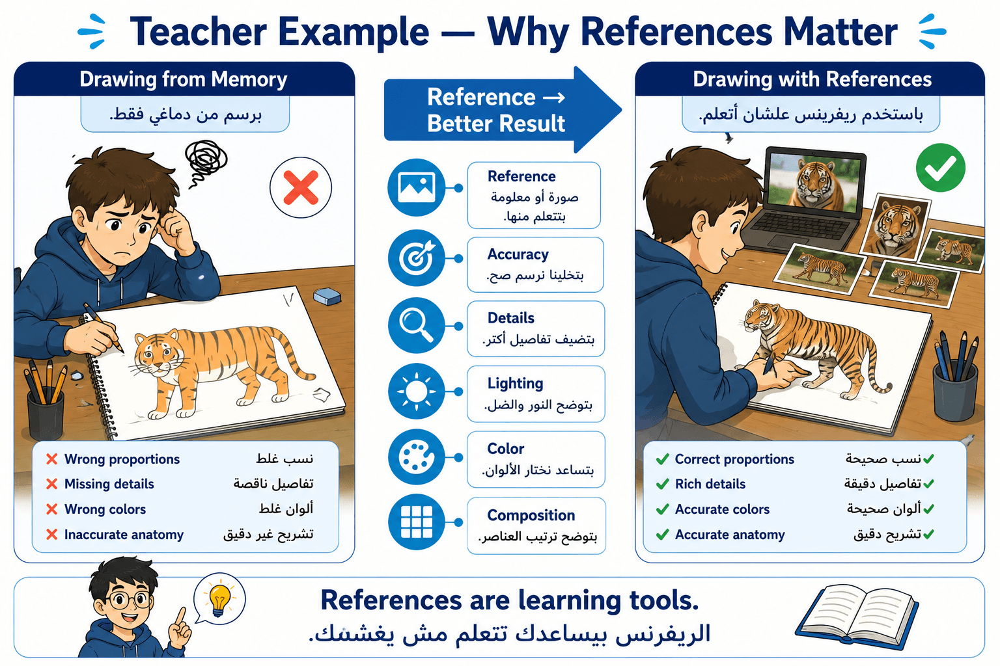
https://chatgpt.com/s/m_6a5a8948ac0881919a52c335fde46565
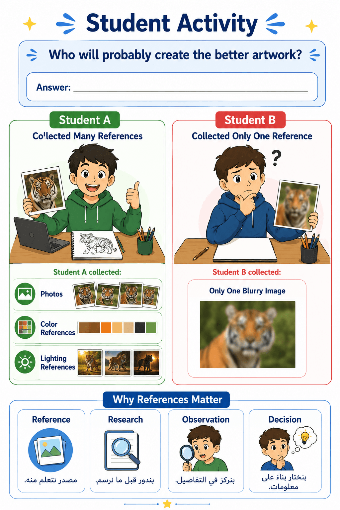
العربية
المراجع.
الـ Reference هو أي صورة أو فيديو أو مجسم أو حتى مكان حقيقي أستخدمه علشان أدرسه قبل ما أرسم.
يعني لو هترسم عربية...
مش منطقي تعتمد على ذاكرتك بس.
الأفضل تفتح صور للعربية وتشوف:
شكلها.
التفاصيل.
الإضاءة.
الألوان.
الزوايا المختلفة.
وده يخلي الرسمة أقرب للحقيقة.
عشان كده كل الفنانين الكبار بيستخدموا References.
العربية
يفهموا قبل ما يبدأوا يرسموا.
الـ References بتساعد الفنان يفهم الأول قبل ما يرسم .
يعني قبل ما تمسك القلم...
افهم الحاجة اللي هترسمها.
مثلاً لو هترسم أسد.
شوف:
طريقة جسمه.
عضلاته.
فروة شعره.
طريقة مشيه.
كل ده هيخلي الرسمة أفضل بكتير.
العربية
تزود الدقة.
لما تستخدم Reference...
بتقلل الأخطاء.
لأنك مش بتتخيل.
أنت شايف الحاجة قدامك.
وده بيخلي:
النسب صح.
الأبعاد صح.
التفاصيل صح.
العربية
التفاصيل.
التفاصيل الصغيرة هي اللي بتفرق بين رسمة عادية ورسمة احترافية.
زي:
تجاعيد الملابس.
شكل العين.
انعكاس الضوء.
تفاصيل الجلد.
كل الحاجات دي صعب نفتكرها من الذاكرة.
العربية
الإحساس أو الجو العام.
ممكن تكون عايز تعمل تصميم مرعب.
أو هادئ.
أو خيالي.
الـ References هتساعدك تشوف ألوان وإضاءات مناسبة لنفس الإحساس.
العربية
اختيار أسلوب الرسم.
مش كل الرسومات شبه بعض.
فيه:
Cartoon
Realistic
Watercolor
الـ Reference يساعدك تختار الـ Style المناسب للمشروع.
العربية
أداة للتعلم.
السلايد بيأكد على نقطة مهمة جدًا.
استخدام الـ Reference مش معناه إنك بتنقل.
بالعكس.
أنت بتتعلم.
بتلاحظ.
وبعدين ترسم بطريقتك.
وده الفرق بين التعلم والنسخ.
وقدام هنعرف تفاصيل اكتر عن استخدامات ال reference الصحيحة
السلايد بيقول استخدم الـ References علشان تدرس خمس حاجات.
الإضاءة.
الضوء جاي منين؟
الظل فين؟
الألوان.
هل الألوان دافية؟
ولا باردة؟
الأشكال.
هل معظمها دوائر؟
ولا مربعات؟
ولا مثلثات؟
الملمس.
هل السطح ناعم؟
ولا خشن؟
توزيع العناصر والحاجات اللي جنب بعضها .
العين هتبص فين الأول؟
الفنان الشاطر بيجمع معلومات قبل ما يبدأ.
كل صورة Reference تعتبر دليل صغير.
ولما تجمع كذا دليل...
تقدر تعمل تصميم قوي.
طالب عايز يرسم نمر.
قبل ما يبدأ...
جمع عشر صور لنمور من زوايا مختلفة.
لما رسم...
طلعت الرسمة واقعية جدًا.
عرفنا ليه بنستخدم References.
دلوقتي السؤال:
نجيبها إزاي؟
وهل كل الصور تعتبر مفيدة؟
الإجابة لا.
لازم نجمع أنواع مختلفة من المراجع.
https://chatgpt.com/s/m_6a5a89a047a08191b0cd5ff23a9f1ad9
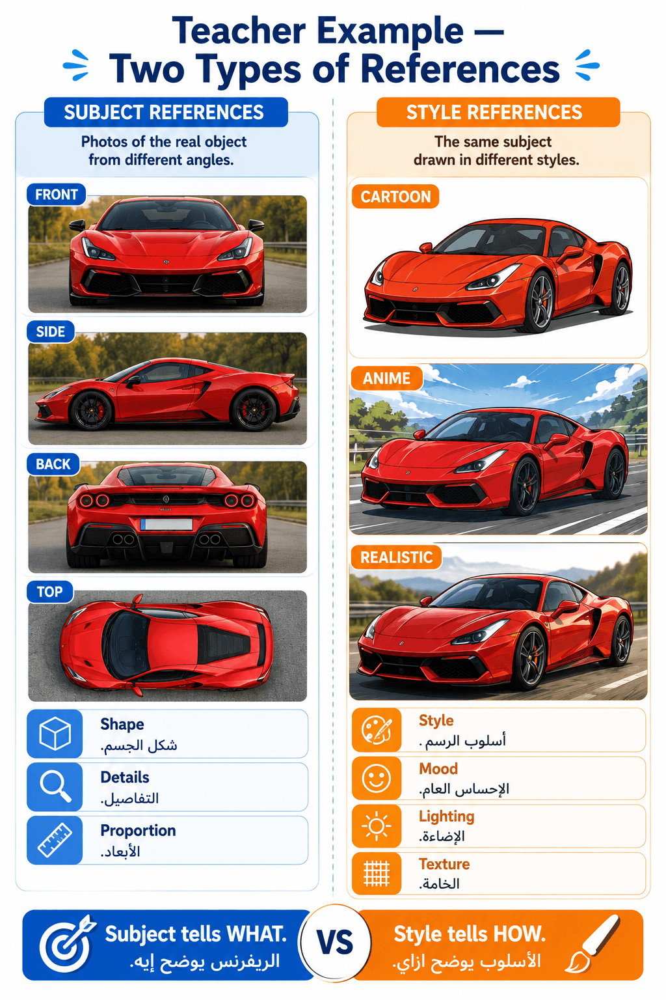
https://chatgpt.com/s/m_6a5a89e6013c819188174cdbf1fd4cfa
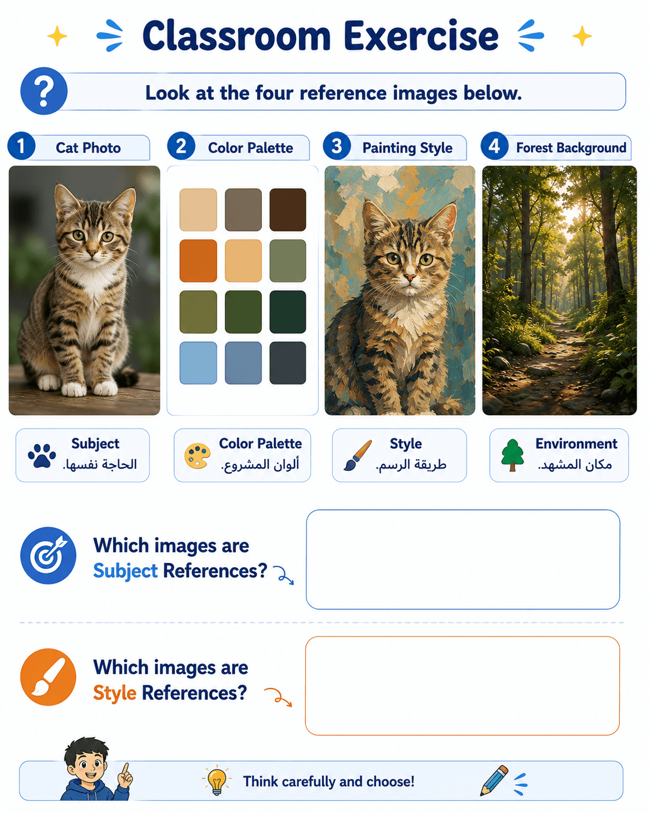
العربية
مراجع الموضوع نفسه.
دي الصور اللي بتوضح الحاجة اللي هترسمها.
لو هترسم قطة.
يبقى تجيب صور لقطط.
من قدام.
من الجنب.
وأثناء الحركة.
علشان تعرف شكلها الحقيقي.
العربية
مراجع أسلوب الرسم.
مش بتشوف الحاجة نفسها.
لكن بتشوف طريقة رسمها.
مثلاً:
ألوان.
إضاءة.
درجة التفاصيل.
نوع الخطوط.
الإحساس العام.
وده يساعدك تختار شكل المشروع.
لو المشروع لعبة أطفال.
هتجمع:
صور للأطفال.
وكمان رسومات كرتونية ملونة.
مش مجرد صور أطفال فقط.
بعد ما عرفنا أهمية الـ References...
لازم نعرف إزاي نستخدمها بشكل أخلاقي.
https://chatgpt.com/s/m_6a5a8a1c09048191b78aefeb2fe5e1a9
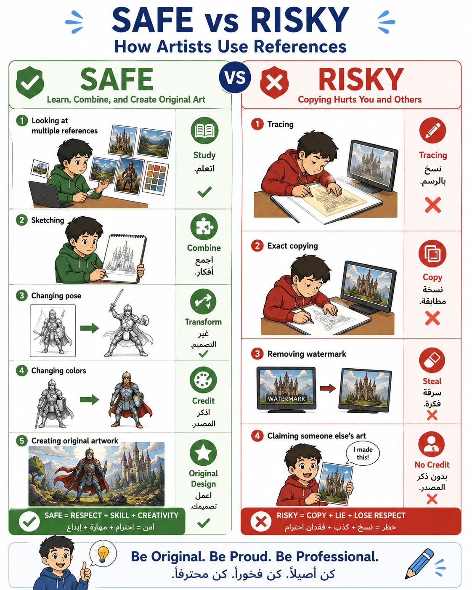
https://chatgpt.com/s/m_6a5a8a39aaf88191a29cd1553281d68b
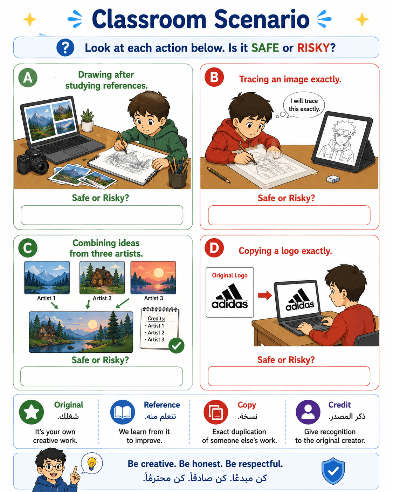
العربية
استخدام صحيح.
الاستخدام الصح هو:
Study
اني اتعلم من المصادر.
Combine
اجمع أفكار من أكتر من مصدر.
Transform
اغير الفكرة وخليها مختلفة.
Credit Sources
لو مطلوب اذكر المصدر.
Create Your Own Design
وفي النهاية اعمل تصميمك أنت.
العربية
استخدام خاطئ.
الحاجات اللي المفروض نتجنبها:
Tracing
ترسم فوق الصورة او تشف الصورة.
Copying
تنقل صورة كاملة.
Removing Credit
تمسح اسم صاحبها.
Claiming Another Artist's Idea
وتقول إنها فكرتك.
وده غير أخلاقي.
طالب شاف Logo على الإنترنت.
بدل ما ينسخه.
درس الألوان.
والتكوين.
وبعدين عمل Logo جديد مختلف.
وده هو الاستخدام الصحيح.
بعد ما جمعنا References...
هنرتبها بطريقة تساعدنا أثناء التصميم.
وده اسمه Mood Board.
https://chatgpt.com/s/m_6a5a8dc0e1e481918c2a036b7481a4f3
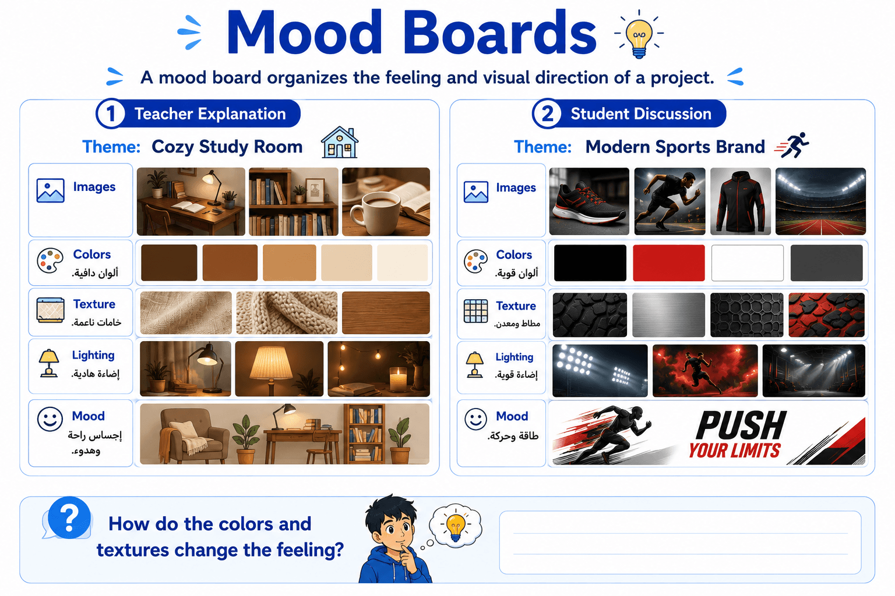
العربية
لوحة الإلهام.
الـ Mood Board عبارة عن لوحة بنجمع عليها كل المراجع الخاصة بالمشروع.
بدل ما الصور تبقى متفرقة.
بنحطها كلها في مكان واحد.
وده يساعدنا ناخد قرارات أسرع أثناء التصميم.
العربية
الصور.
الصور بتوضح:
الموضوع.
المكان.
الإضاءة.
الخامات.
الشخصيات.
وكل حاجة ليها علاقة بالمشروع.
العربية
الألوان.
اول حاجة بنحددالألوان.
هل المشروع هيكون:
غامق.
فاتح.
دافي.
بارد.
كل ده بيتحدد هنا.
العربية
الملاحظات.
مش بنحط صور بس.
بنكتب ملاحظات.
ليه اخترنا الصورة دي؟
إيه اللي عجبنا فيها؟
هنستفيد منها في إيه؟
وده بيسهل الشغل بعد كده.
لو هنصمم لعبة فضاء.
هنجمع:
صور مجرات.
صور كواكب.
لوحة ألوان أزرق وبنفسجي.
صور واجهات ألعاب خيال علمي.
ملاحظات عن نوع الإضاءة والخطوط.
يبقى قبل ما نرسم أي حاجة، عندنا رؤية واضحة للمشروع كله.
لحد دلوقتي اتعلمنا:
يعني إيه Reference.
وإزاي نجمع References.
وإزاي نحللها.
وإيه هو الـ Mood Board.
دلوقتي هنطبق كل ده في نشاط سريع.
https://chatgpt.com/s/m_6a5aac41ad7c81919230d7d49bf2d656
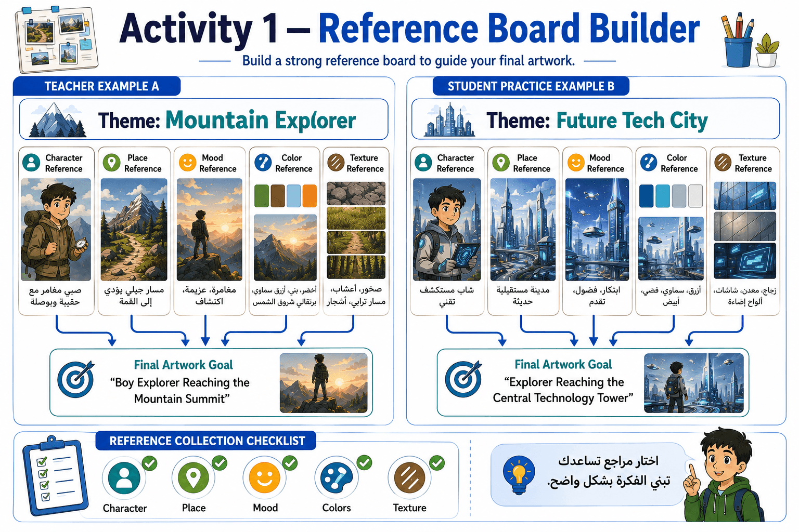
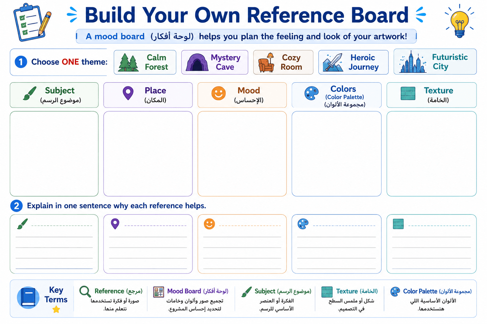
PROJECT TITLE:
[اكتب اسم المشروع]
PROJECT THEME:
[المشروع بيتكلم عن إيه؟]
MAIN CHARACTER:
[مين الشخصية الرئيسية؟]
ENVIRONMENT / PLACE:
[فين الأحداث بتحصل؟]
MOOD:
[عاوز المشاهد يحس بإيه؟]
COLOR PALETTE:
[اكتب 3 إلى 5 ألوان أساسية]
IMPORTANT OBJECTS:
[إيه العناصر المهمة اللي لازم تظهر؟]
STORY IDEA:
[احكي الفكرة في سطر أو سطرين]
--------------------------------------------------
Create a professional educational infographic titled:
"Inspiration Map"
Style:
Modern educational infographic.
Flat vector illustration.
Professional classroom poster.
White background.
Blue educational color palette.
Rounded cards.
Soft shadows.
Clean visual hierarchy.
Large readable typography.
Student-friendly.
Ages 12–17.
Ultra HD 4K.
Print-ready.
Layout:
Top header with project title.
Top-right corner:
Friendly cartoon boy student brainstorming ideas using AI on a laptop.
Center:
Large central circle displaying PROJECT THEME.
Create six connected branches:
MAIN CHARACTER
ENVIRONMENT / PLACE
MOOD
COLOR PALETTE
IMPORTANT OBJECTS
STORY IDEA
Each branch should contain:
Custom illustrations.
Educational icons.
Visual labels.
Color-coded category.
Bottom section:
"Project Direction"
A compact visual summary combining all project elements.
Design Goals:
Organized.
Creative.
Easy to understand.
Professional classroom quality.
No magic.
No temples.
No religious symbols.
No watermark.
مدة النشاط.
السلايد بيقول إن النشاط مدته 10 دقائق.
يعني لازم الفريق يشتغل بسرعة ويقسم الأدوار.
المهم هنا مش الرسم.
المهم التفكير وجمع الأفكار.
اشتغلوا في فرق من 3.
كل فريق هيكون من 3 طلاب.
ممكن كل واحد يكون مسئول عن جزء.
مثلاً:
واحد يدور على الأفكار.
واحد يختار الصور.
واحد يكتب الملاحظات ويعرض النتيجة.
وده بيخلي الشغل أسرع.
اختاروا موضوع واحد.
كل فريق يختار Theme واحد فقط.
زي:
Calm Forest
Futuristic City
Cozy Room
Mystery Cave
Heroic Journey
بعد ما تختاروا، كل الأفكار هتكون مبنية على نفس الـ Theme.
اجمعوا خمس مراجع.
الفريق هيجمع خمس أنواع مختلفة من الـ References.
مش خمس صور وخلاص.
لكن كل Reference ليه وظيفة.
السلايد محددهم:
Subject
Place
Mood
Colors
Texture
يبقى لازم كل واحد يخدم التصميم بطريقة مختلفة.
اشرح كل Reference.
بعد اختيار الـ References.
اكتبوا جملة واحدة فقط.
تشرح:
ليه اخترتوا المرجع ده؟
مثلاً:
"اخترنا الصورة دي علشان توضح شكل الأشجار."
أو
"اخترنا الألوان دي لأنها بتدي إحساس بالهدوء."
اعرضوا أفضل فكرة.
في النهاية.
كل فريق هيختار أقوى Reference عنده.
ويشرح في أقل من دقيقة.
ليه اختاره؟
وإزاي هيساعد التصميم؟
مثلاً الفريق اختار:
Theme
Futuristic City
يبقى الـ References ممكن تكون:
Subject → Flying Cars
Place → Neon Streets
Mood → High Tech
Colors → Blue + Purple + Cyan
Texture → Metal + Glass
كل اختيار ليه سبب واضح.
بعد ما عرفنا أهمية الـ References، السؤال دلوقتي:
أجيب الأفكار دي منين؟
ناس كتير فاكرة إن الإلهام بيجي فجأة، لكن الحقيقة إن أغلب المصممين بيجمعوا أفكار من كل حاجة حواليهم.
https://chatgpt.com/s/m_6a5a8c6af6708191b6f1aac4abe73719
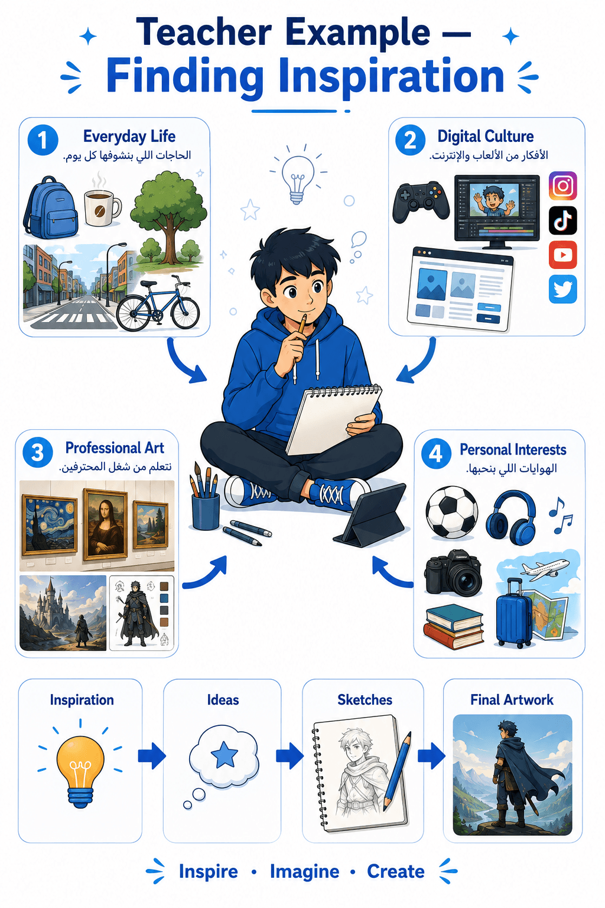
https://chatgpt.com/s/m_6a5a8c9bbc2c819193a14867ebd8eff6
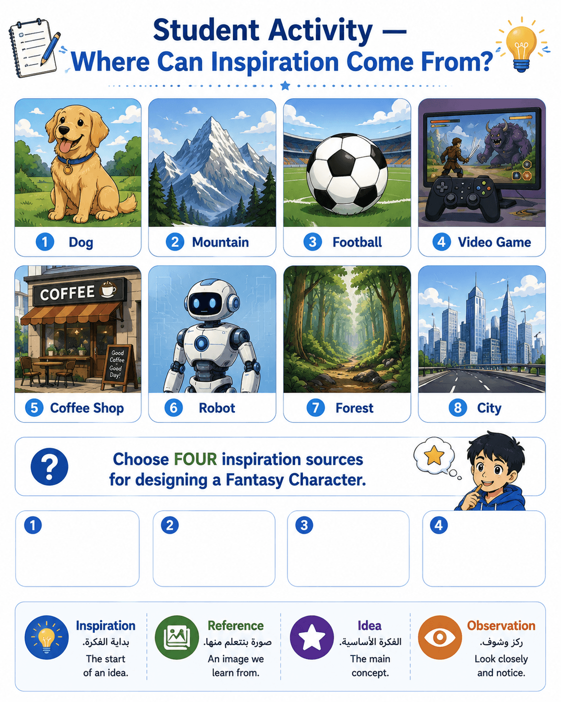
الحياة اليومية.
أول مصدر للإلهام هو حياتنا اليومية.
أي حاجة بنشوفها كل يوم ممكن تتحول لفكرة تصميم.
زي:
المدرسة.
الشارع.
البيت.
الأشجار.
الحيوانات.
العربية.
كوب القهوة.
كل دي ممكن تكون بداية مشروع جديد.
المصمم الشاطر بيلاحظ التفاصيل اللي الناس العادية ممكن متاخدش بالها.
الثقافة الرقمية.
تاني مصدر هو العالم الرقمي.
يعني:
الألعاب.
التطبيقات.
مواقع الإنترنت.
السوشيال ميديا.
الرسوم المتحركة.
الفيديوهات.
لما تلاحظ تصميم لعبة أو تطبيق، حاول تسأل نفسك:
ليه الألوان دي؟
ليه الأزرار بالشكل ده؟
إزاي التصميم خلاني أفهم المكان بسرعة؟
أعمال الفنانين المحترفين.
المصدر التالت هو شغل المحترفين.
مش بنبص علشان نقلدهم.
لكن علشان نتعلم.
نسأل نفسنا:
استخدموا إضاءة إزاي؟
اختاروا الألوان ليه؟
ليه الشخصية في النص؟
إزاي وصلوا إحساس معين؟
كل Design هو درس مجاني لو عرفنا نقرأه صح.
اهتماماتك الشخصية.
آخر مصدر هو نفسك.
الحاجات اللي بتحبها.
لو بتحب:
الكورة.
السيارات.
الفضاء.
السفر.
الحيوانات.
كل ده ممكن يتحول لفكرة مشروع.
عشان كده كل مصمم ليه أسلوب مختلف، لأنه بيستمد أفكاره من اهتماماته.
لو طالب بيحب كرة القدم.
ممكن يعمل Poster لفريقه المفضل.
أما طالب بيحب الفضاء.
ممكن يصمم لعبة أو مشهد لكوكب جديد.
الاتنين بدأوا من نفس الحاجة:
Inspiration.
بعد ما جمعنا الـ References.
هل خلاص؟
لا.
لازم نعرف نقرأ الصورة بعين مصمم، مش مجرد نشوفها.
https://chatgpt.com/s/m_6a5a8d2824708191b9481fb668b0b324
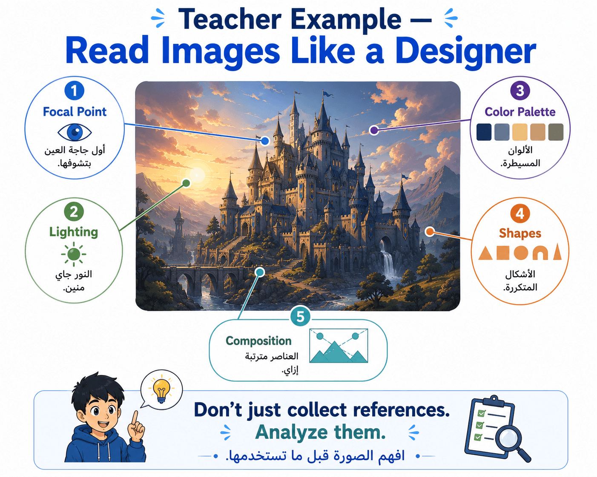
https://chatgpt.com/s/m_6a5a8d6624d481918bc2f3ba08ff39a5
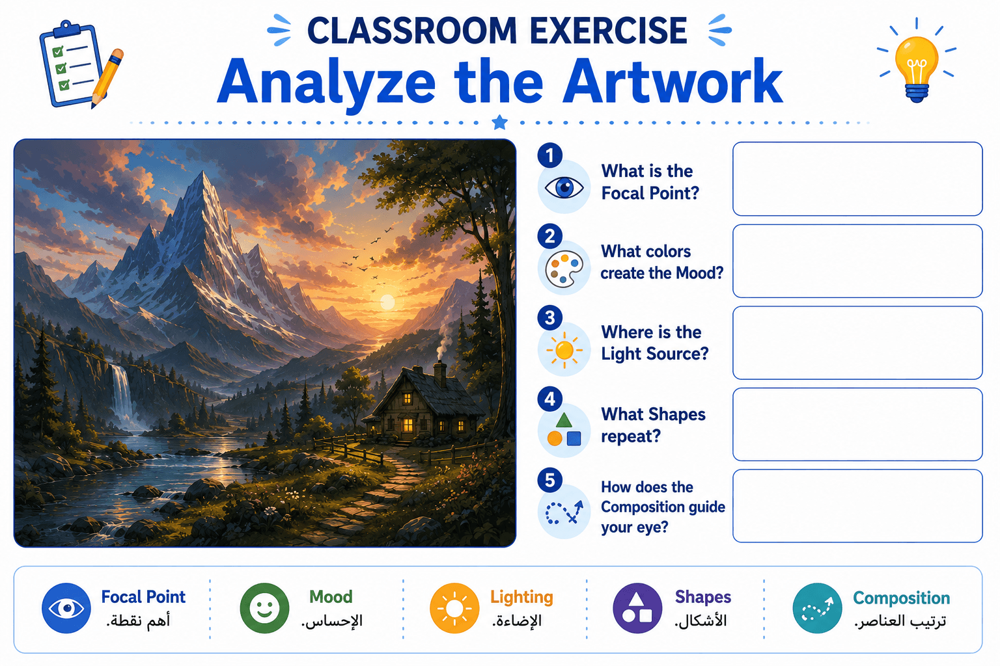
نقطة التركيز.
أول سؤال أسأله:
إيه أول حاجة عيني راحتلها؟
دي اسمها:
Focal Point
المصمم بيحددها باستخدام:
اللون.
الحجم.
الإضاءة.
المكان.
الألوان بتحدد الإحساس.
بعد كده أبص على الألوان.
هل التصميم:
هادئ؟
ولا مخيف؟
ولا مبهج؟
الألوان هي اللي بتخلق الإحساس ده.
مثلاً:
الأزرق = هدوء.
الأحمر = طاقة أو خطر.
الأصفر = سعادة.
مصدر الإضاءة.
بعدين أشوف:
النور جاي منين؟
لو النور جاي من فوق.
يبقى الظل هيبقى تحت.
ولو جاي من اليمين.
يبقى الظلال ناحية الشمال.
فهم الإضاءة بيخلي الرسم واقعي.
الأشكال المتكررة.
بص على الأشكال.
هل فيه دوائر كتير؟
ولا مثلثات؟
ولا خطوط مستقيمة؟
تكرار الأشكال بيعمل وحدة في التصميم ويخليه منظم.
ترتيب العناصر.
آخر سؤال:
إزاي التصميم بيحرك عينك؟
هل بدأت بالشخصية؟
بعدين الخلفية؟
بعدين العنوان؟
لو التصميم بيقود عينك بسهولة، يبقى الـ Composition ناجح.
اعرض صورة لشخص مشهور.
واسأل الطلبة:
أول حاجة شوفتها؟
اللون الأساسي إيه؟
النور جاي منين؟
فيه أشكال متكررة؟
عينك مشت إزاي؟
كده بقينا بنحلل التصميم زي المصممين.
أي تصميم ناجح لازم يجاوب على أربع أسئلة:
بيتكلم عن إيه؟
عايز المشاهد يحس بإيه؟
إيه الرسالة؟
مين الجمهور؟
https://chatgpt.com/s/m_6a5a8ef381a88191b9fc1b75fc71cd30
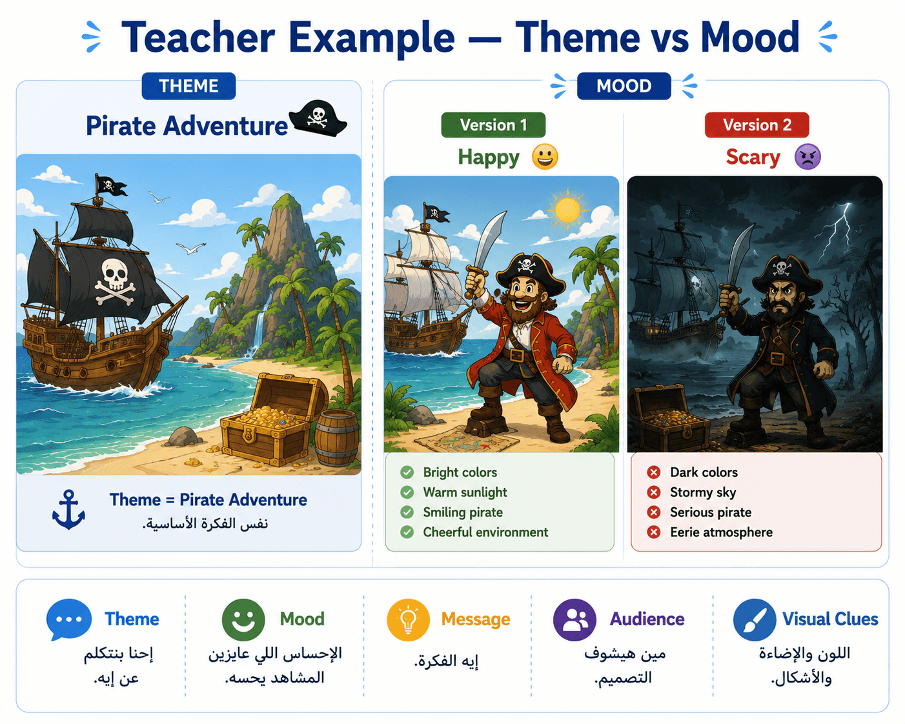
https://chatgpt.com/s/m_6a5a8f5570208191b1ac1126b59edb08
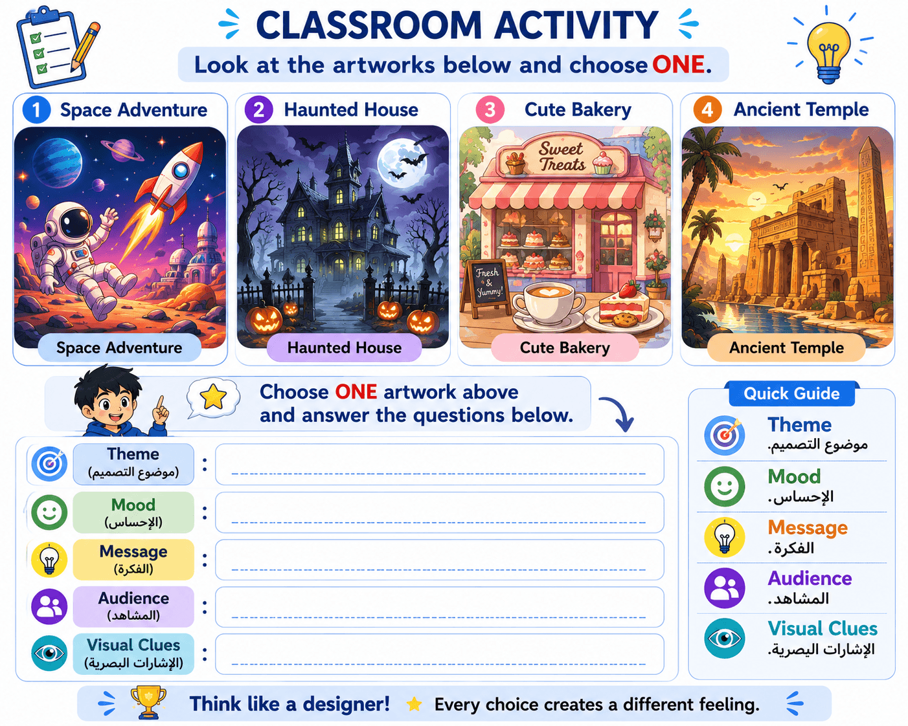
موضوع التصميم.
الـ Theme هو الفكرة الأساسية.
مثلاً:
Space
Jungle
Pirates
Fantasy
يعني التصميم بيتكلم عن إيه.
الإحساس.
الـ Mood هو الشعور اللي عايزين المشاهد يحسه.
هل:
سعادة؟
غموض؟
رعب؟
حماس؟
ممكن نفس الـ Theme يبقى ليه أكتر من Mood.
الإشارات البصرية.
الإحساس مش بيطلع لوحده.
بيطلع من:
الألوان.
الإضاءة.
الأشكال.
الخامات.
التكوين.
كلهم بيشتغلوا مع بعض.
الرسالة.
كل تصميم بيوصل رسالة.
مثلاً:
حافظ على البيئة.
استمتع بالمغامرة.
اشتري المنتج.
الرسالة لازم تكون واضحة.
الجمهور المستهدف.
مين هيشوف التصميم؟
طفل؟
شاب؟
لاعب؟
مدرس؟
كل جمهور ليه طريقة تصميم مختلفة.
لو هنعمل Poster للأطفال.
هنستخدم:
ألوان زاهية.
شخصيات لطيفة.
خط كبير.
لكن لو Poster لقصة رعب.
الألوان هتبقى غامقة.
والإضاءة ضعيفة.
دلوقتي هننتقل لمستوى أعلى.
بدل ما نجمع References بس.
هنحولها لأفكار تصميم.
https://chatgpt.com/s/m_6a5aad431ec48191b747f44545cd1d5d
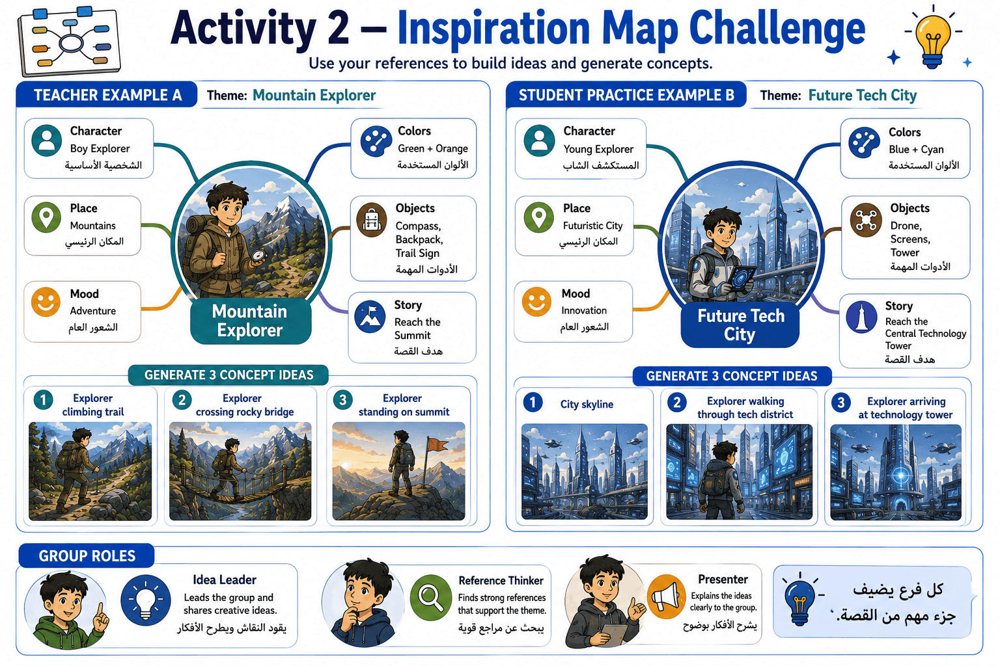
PROJECT TITLE:
[اكتب اسم المشروع]
PROJECT THEME:
[المشروع بيتكلم عن إيه؟]
MAIN CHARACTER:
[مين الشخصية الرئيسية؟]
ENVIRONMENT / PLACE:
[فين الأحداث بتحصل؟]
MOOD:
[عاوز المشاهد يحس بإيه؟]
IMPORTANT OBJECTS:
[إيه العناصر المهمة؟]
CONCEPT A:
[اوصف أول فكرة للمشهد]
CONCEPT B:
[اوصف ثاني فكرة للمشهد]
CONCEPT C:
[اوصف ثالث فكرة للمشهد]
MAIN FOCAL POINT:
[إيه أهم عنصر لازم يلفت الانتباه؟]
--------------------------------------------------
Create a professional educational infographic titled:
"Three Concept Ideas"
Style:
Exactly the same visual style as Activity 1.
Layout:
Top section:
Small project summary card using the same information from Activity 1.
Arrow showing:
Inspiration Map → Concept Development
Center section:
Three large concept cards side by side.
Concept A
Concept B
Concept C
Each card must include:
Large thumbnail illustration.
Title.
Mood label.
Focal point label.
Composition notes.
Visual callouts.
Under each concept:
Evaluation checklist:
Clear Message
Strong Mood
Strong Composition
Achievable Design
Add a large star badge for selecting the best concept.
Bottom section:
"Best Concept Selection"
Show comparison arrows between all concepts.
Design Goals:
Help students compare visual ideas before creating final artwork.
Keep same colors, same character style, same project identity from Activity 1.
No watermark.
مدة النشاط.
مدة النشاط من 20 إلى 25 دقيقة.
وده نشاط أكبر من اللي قبله.
لأنه محتاج تفكير وتخطيط.
اختاروا فكرة المشروع.
كل فريق يختار فكرة واحدة.
مثلاً:
Fantasy
Space
Pirates
Robots
Jungle
ودي هتبقى مركز كل الخريطة.
خريطة الإلهام.
ارسموا دائرة في النص.
واكتبوا اسم الـ Theme.
ومنها ابدأوا تطلعوا فروع.
زي خريطة ذهنية.
الشخصية.
مين بطل القصة؟
طفل؟
روبوت؟
فارس؟
وحش؟
المكان.
الأحداث بتحصل فين؟
مدينة؟
غابة؟
فضاء؟
كهف؟
الإحساس.
عايز المشاهد يحس بإيه؟
راحة؟
رعب؟
حماس؟
غموض؟
الألوان.
اختاروا Palette مناسبة.
مثلاً:
الغابة → أخضر.
الفضاء → أزرق غامق.
الرعب → أسود وأحمر.
العناصر.
إيه الحاجات الموجودة؟
شجر.
سيوف.
سيارات.
روبوتات.
كنوز.
القصة.
حتى لو بسيطة.
لازم يبقى فيه قصة.
مثلاً:
Robot searching for energy.
أو
Explorer discovers ancient treasure.
اعملوا 3 أفكار.
ممنوع أول فكرة وخلاص.
اعملوا 3 اتجاهات مختلفة.
وبعدين اختاروا أفضل واحد.
وده اللي بيعمله أي Designer محترف.
أدوار الفريق.
الفريق يقسم نفسه.
Idea Leader
مسئول عن الأفكار.
Reference Thinker
يجمع المراجع.
Presenter
يعرض الشغل.
Theme
Space Adventure
Concept 1
Astronaut exploring Mars.
Concept 2
Robot city.
Concept 3
Alien jungle.
بعد كده الفريق يختار أفضل Concept.
قبل ما أي فريق يعرض شغله.
لازم يراجع نفسه.
موضوع واضح.
أول سؤال.
هل أي حد يشوف التصميم يعرف بيتكلم عن إيه؟
لو لأ.
يبقى الـ Theme مش واضح.
دلائل الإحساس.
هل:
الألوان.
الإضاءة.
الأشكال.
كلهم بيدوا نفس الإحساس؟
ولا كل واحد في اتجاه؟
ثلاث أفكار.
هل فعلاً جربتوا أكتر من فكرة؟
ولا وقفتوا عند أول فكرة؟
المصمم المحترف بيستكشف أكتر من احتمال.
مزيج أصلي.
هل التصميم عبارة عن Copy؟
ولا دمج أكتر من Reference؟
الهدف إن النتيجة تبقى جديدة.
لو دمجنا:
قلعة + روبوت + ألوان نيون
يبقى ده Original Mix.
لكن لو نسخنا صورة لعبة زي ما هي.
يبقى ده Copy.
الخطوة دي دورها تعرفنا إزاي نطلع أفكار كتير بسرعة؟
اعمل أفكار كتير الأول.
في البداية.
اكتب أي فكرة.
متفكرش إذا كانت ممتازة أو لا.
التقييم ييجي بعدين.
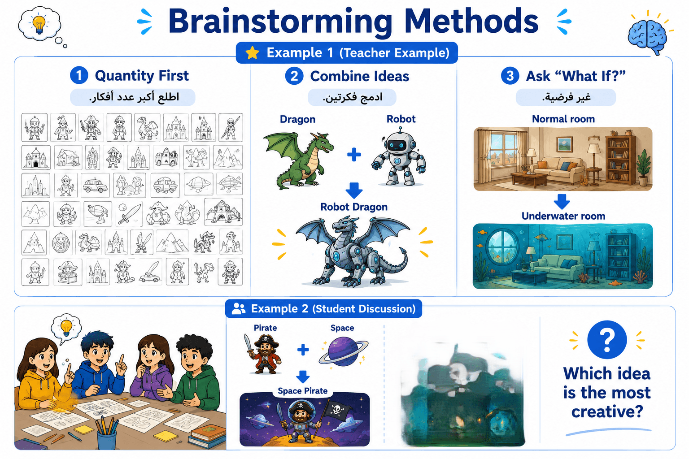
ادمج الأفكار.
خد فكرتين.
واعمل منهم فكرة جديدة.
مثلاً:
Robot + Jungle.
Pirate + Space.
Castle + Cyberpunk.
اسأل: ماذا لو؟
دي من أقوى طرق الإبداع.
اسأل نفسك:
What if the city was underwater?
تخيل لو المدينة اللي هنرسمها كانت تحت الماية
What if dinosaurs used computers?
تخيل لو الدينصورات اللي هنرسمها كانوا بيستخدموا الكمبيوتر
What if cats built robots?
تخيل لو القطط خليناهم مهدسين بيعملوا روبوتات
الأسئلة دي بتفتح أفكار جديدة جدًا.
What if...
The pyramids were floating in the sky?
تخيل لو الاهرامات كانت بتطير في الهوا
ممكن منها يطلع مشروع كامل.
لحد دلوقتي عرفنا إزاي نجمع References ونطلع أفكار.
دلوقتي هنستخدم أداة من أشهر أدوات التفكير الإبداعي اسمها Mind Map.
الـ Mind Map بتساعدنا ننظم الأفكار بدل ما تكون كلها ملخبطة في دماغنا.
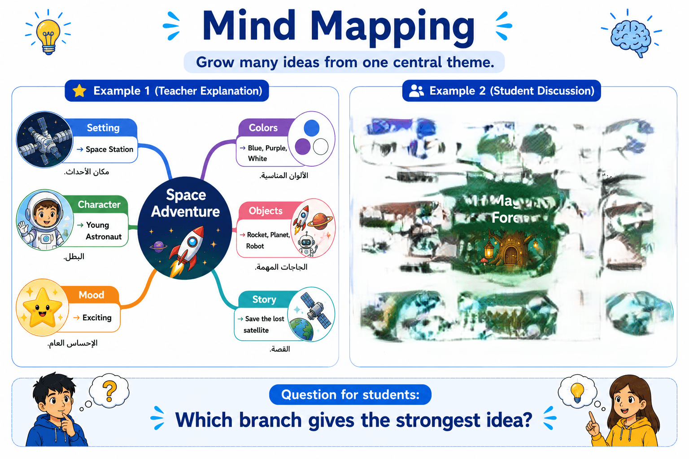
الخريطة الذهنية.
الـ Mind Map عبارة عن رسم بسيط بنبدأ فيه بفكرة واحدة في النص.
ومنها نطلع فروع لكل حاجة مرتبطة بيها.
بدل ما أكتب صفحة كاملة، أكتب كلمات مفتاحية وأرسم خطوط تربطهم ببعض.
وده بيساعدني أشوف العلاقة بين الأفكار بسرعة.
تقريبًا كل المصممين وكتاب القصص ومبرمجين الألعاب بيستخدموا الطريقة دي قبل ما يبدأوا الشغل.
فكرة المشروع الأساسية.
أول خطوة إنك تكتب موضوع المشروع في النص.
يعني مثلًا:
Space Adventure
Magic Forest
Pirate Island
Future City
كل الأفكار اللي بعد كده هتطلع من الفكرة دي.
الفروع.
بعد كده نبدأ نعمل فروع حوالين الفكرة.
السلايد بيقول إن أهم الفروع هي:
Setting
مكان الأحداث.
Mood
الإحساس العام.
Character
الشخصية.
Color
الألوان.
Objects
الأشياء المهمة.
Story
القصة.
كل فرع منهم هيولد أفكار جديدة.
رموز سريعة.
بدل ما تكتب جمل طويلة.
ارسم رمز بسيط.
مثلًا:
🌳 = Forest
🚀 = Rocket
👑 = King
💎 = Crystal
المخ بيفهم الصور أسرع من الكلام.
حدد أفضل الأفكار.
بعد ما تخلص.
بص على كل الفروع.
وشوف أنهي الأفكار عجبتك أكتر.
اعمل عليها دايرة.
دي غالبًا هتبقى بداية مشروعك.
لو المشروع اسمه:
Haunted Castle
قلعة مسكونة
الفروع ممكن تكون:
Setting → Old Castle
Character → Ghost
Mood → Scary
Objects → Candle
Colors → Dark Blue
Story → Escape Before Sunrise
أكبر غلطة بيعملها أي مبتدئ...
إنه أول ما تجيله فكرة يبدأ يرسمها على طول.
لكن المصمم المحترف بيطلع أكتر من فكرة الأول.
https://chatgpt.com/s/m_6a5a94ce2c988191bffd9534b7726401
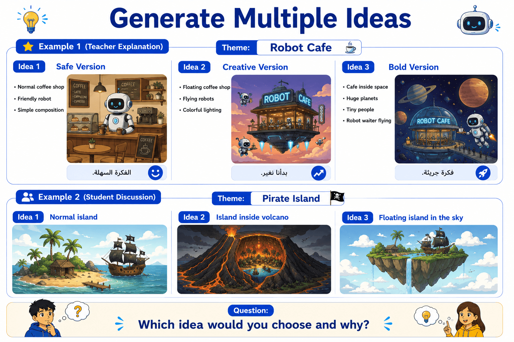
السلايد بيقول:
ابدأ بفكرة سهلة وواضحة.
دي بتكون أقرب حاجة جات في دماغك.
لكن غالبًا مش هتبقى أحسن فكرة.
بعدها حاول تغير حاجة كبيرة.
ممكن تغير:
Mood
أو
Setting
أو
Character
ساعات تغيير واحد بس يخلي التصميم أحسن بكتير.
الفكرة الجريئة.
دي بقى الفكرة اللي مفيهاش خوف.
غير زاوية الكاميرا.
كبر العناصر.
صغرها.
غير القصة.
اعمل حاجة غير متوقعة.
كتير من أفضل التصميمات بدأت بفكرة كانت شكلها غريب.
لو المشروع:
Robot Cafe
Idea 1
روبوت بيقدم قهوة.
Idea 2
كافيه في الفضاء.
Idea 3
مدينة كاملة كلها روبوتات بتخدم البشر.
بعدها نقارن ونختار أحسن واحدة.
السلايد بيقسم الأفكار إلى ثلاث مستويات:
Safe
Creative
Bold
والهدف إنه يعلم الطلبة إن أول فكرة مش لازم تكون النهائية.
دلوقتي هنطبق كل اللي اتعلمناه.
مش هنرسم لوحة كاملة.
هنرسم 3 أفكار صغيرة جدًا.
https://chatgpt.com/s/m_6a5aadc854f0819195ff4135d60944e3
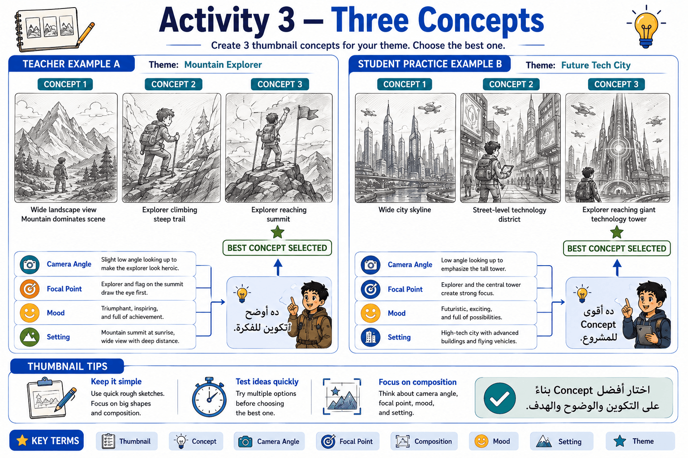
Prompt Template للطالب
PROJECT TITLE:
[اكتب اسم المشروع]
SELECTED CONCEPT:
[أي Concept اخترته؟]
PROJECT THEME:
[المشروع بيتكلم عن إيه؟]
MAIN CHARACTER:
[مين الشخصية الرئيسية؟]
ENVIRONMENT:
[فين الأحداث؟]
MOOD:
[الإحساس العام؟]
STRENGTH:
[إيه أقوى حاجة في التصميم؟]
QUESTION:
[إيه السؤال اللي ممكن يتسأل؟]
SUGGESTION:
[إيه أهم اقتراح تطوير؟]
--------------------------------------------------
Create a professional educational infographic titled:
"Peer Critique & Feedback"
Style:
Exactly the same visual style as Activities 1 and 2.
Layout:
Top section:
Selected Concept displayed prominently.
Center section:
Three feedback cards:
Strength
Question
Suggestion
Each card should include:
Icons
Visual markers
Speech bubble design
Right section:
Four cartoon boy students discussing the project.
Roles:
Artist
Feedback Speaker
Note Taker
Time Keeper
Bottom section:
"Improvement Plan"
Large action card showing:
What will be changed?
Why will it improve the artwork?
Arrow pointing toward next activity.
Design Goals:
Show collaborative improvement process.
Educational and professional.
No watermark.
اختار موضوع واحد.
اختار Theme من الـ Inspiration Map اللي عملتها.
متغيروش كل شوية.
خليك مركز على فكرة واحدة.
ارسم ثلاث أفكار.
ارسم 3 رسومات صغيرة جدًا.
اسمها:
Thumbnail Sketches
مش لازم تبقى جميلة.
المهم توضح الفكرة.
غير حاجة مهمة كل مرة.
كل Concept لازم يختلف عن اللي قبله.
ممكن تغير:
Camera Angle
أو
Focal Point
أو
Mood
أو
Setting
علشان يبقى عندك اختيارات حقيقية.
حدد أفضل فكرة.
بعد ما تخلص الثلاثة.
بص عليهم.
واختار أوضح فكرة.
وأكتر فكرة متحمس تنفذها.
حط عليها نجمة.
نصيحة.
السلايد بيقول:
Ugly Thumbnails are allowed.
يعني متضيعش وقتك في الرسم الجميل.
الهدف هنا التفكير.
مش إنتاج لوحة نهائية.
Theme:
Magic Forest
Concept 1
غابة بالنهار.
Concept 2
الغابة بالليل.
Concept 3
الغابة وقت المطر مع ضباب.
بعدها نختار أفضل Concept ونكمل عليه.
لحد دلوقتي اتعلمنا إزاي نطلع أفكار، وإزاي نستخدم الأشكال والألوان والتكوين علشان نوصل رسالة أو إحساس.
لكن قبل ما نقرر إن فكرة معينة تستاهل تتحول لمشروع كامل، لازم نسأل نفسنا شوية أسئلة مهمة.
https://chatgpt.com/s/m_6a5a98983bf0819190750dc24eaff7f9
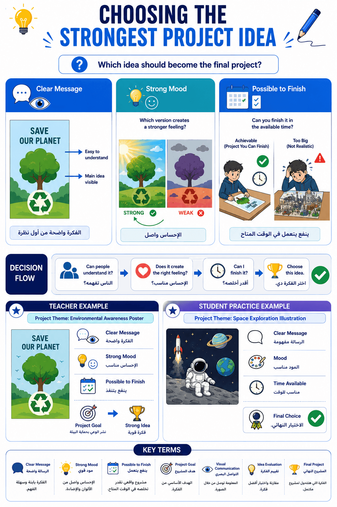
العربية
(الفكرة واضحة ولا لأ؟)
أول حاجة لازم نفكر فيها:
لو وريت شغلك لحد أول مرة يشوفه، هيقدر يفهم الفكرة الأساسية؟
مش لازم يفهم كل التفاصيل.
لكن لازم يفهم الرسالة الرئيسية.
لو الناس كل واحد بيفسر التصميم بطريقة مختلفة تمامًا، يبقى غالبًا الرسالة مش واضحة كفاية.
عشان كده المصمم الشاطر بيسأل نفسه دايمًا:
"أنا عايز الناس تفهم إيه أول ما تبص على الشغل؟"
لو عامل Poster عن حماية البيئة.
والناس أول حاجة لاحظتها إعلان لمشروب أو منتج.
يبقى الرسالة الأساسية ضاعت.
العربية
(الإحساس واصل ولا لأ؟)
مش كفاية إن الفكرة تكون مفهومة.
لازم كمان الإحساس يكون واضح.
الألوان والإضاءة والأشكال لازم كلها تشتغل مع بعض.
لو بتعمل مشهد مرعب مثلاً.
هل الألوان والإضاءة بتدعم الإحساس ده؟
ولا المشهد شكله مرح ومبهج؟
كل عنصر في التصميم لازم يساعد في توصيل نفس الإحساس.
مشهد مغامرة غامضة غالبًا هيستخدم:
إضاءة ضعيفة
ألوان أغمق
تباين واضح
مش ألوان أطفال زاهية جدًا.
العربية
(ينفع يتعمل فعلًا؟)
دي نقطة مهمة جدًا للمبتدئين.
أحيانًا الفكرة تكون حلوة.
لكن محتاجة وقت أو مهارات أو أدوات أكبر من المتاح.
لازم نسأل:
عندي وقت كفاية؟
عندي الأدوات المناسبة؟
عندي المهارات المطلوبة؟
اختيار مشروع مناسب أهم من اختيار مشروع ضخم.
طالب عنده أسبوع واحد.
من الأفضل يعمل Illustration قوية ومنظمة.
بدل ما يحاول يعمل لعبة كاملة أو فيديو قصير ويقف في النص.
بعد ما نختار فكرة مناسبة، ما بنبدأش على طول في الرسم النهائي.
المحترفين تقريبًا كلهم بيعملوا خطوة مهمة جدًا قبل التنفيذ.
الخطوة دي اسمها Thumbnail Sketches.
https://chatgpt.com/s/m_6a5a9955bb048191b86d15d2b5ae1e76
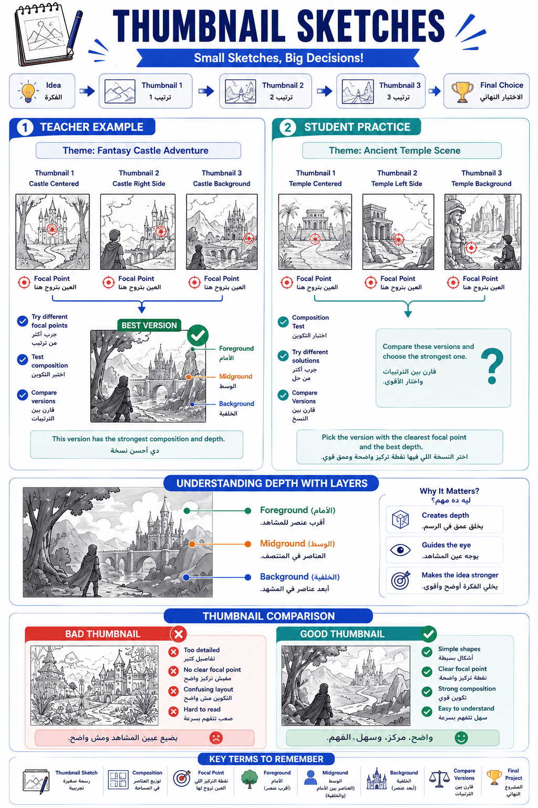
العربية
(اسكتشات صغيرة وسريعة)
الـ Thumbnail Sketch عبارة عن رسمة صغيرة جدًا.
مش الهدف منها الجمال.
ومش الهدف منها التفاصيل.
هدفها الوحيد إنها تساعدنا نجرب أفكار مختلفة بسرعة.
بدل ما نضيع ساعات في رسم كبير.
نجرب 5 أو 10 أفكار صغيرة الأول.
تخيل إنك عايز تصمم غلاف كتاب.
ممكن تعمل 6 اسكتشات صغيرة جدًا.
كل واحدة فيها ترتيب مختلف للعناصر.
وبعدين تختار الأفضل.
العربية
(خليها صغيرة جدًا)
كل ما الاسكتش صغر.
كل ما هتركز على الفكرة الأساسية.
لأنك مش هتلحق تدخل تفاصيل كثيرة.
وده شيء جيد.
لأننا في المرحلة دي بنفكر في التكوين العام مش التفاصيل.
العربية
(جرّب أماكن مختلفة للحاجة اللي تشد العين)
مش لازم العنصر الرئيسي يبقى في نفس المكان كل مرة.
جرّب:
يمين
شمال
فوق
تحت
المنتصف
أحيانًا تغيير بسيط في المكان يغيّر قوة التصميم بالكامل.
العربية
(جرّب تخليه مرة قريب ومرة في الوسط مرة لبعيد)
وأنت بتعمل Thumbnail.
اسأل نفسك:
إيه الحاجة القريبة؟
إيه اللي في النص؟
إيه اللي بعيد؟
ده بيدي إحساس بالمسافات ويخلي المشهد أقوى وأسهل للفهم.
العربية
(قارن بين النسخ قبل ما تختار)
غلط كبير إن أول فكرة تيجي في دماغك تعتبرها أفضل فكرة.
اعمل أكثر من نسخة.
وبعدين قارن بينهم.
غالبًا هتكتشف إن في نسخة أقوى بكتير من الأولى.
https://chatgpt.com/s/m_6a5a9a24f6a08191b66ff0d4bbd80a20
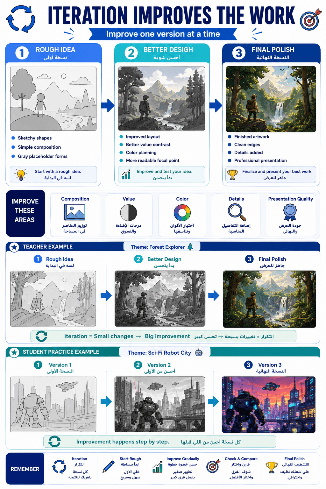
بعد ما اخترنا أفضل Thumbnail.
لسه الشغل ما خلصش.
أي تصميم قوي بيمر بعدة محاولات وتحسينات.
وده اللي بنسميه Iteration.
العربية
(تطوير الشغل نسخة ورا نسخة)
مفيش تصميم بيطلع مثالي من أول محاولة.
المصممين بيعملوا نسخة.
بعدها يحسنوا عليها.
بعدها يحسنوا تاني.
وهكذا.
كل نسخة بتبقى أحسن من اللي قبلها.
العربية
(فكرة أولية)
في البداية بنحدد:
الأشكال الكبيرة
أهم العناصر
الحاجة اللي هتشد العين
من غير تفاصيل كثيرة.
مجرد كتل وأشكال تحدد أماكن العناصر الرئيسية.
العربية
(نسخة أحسن)
هنا بنبدأ نحسن:
ترتيب العناصر
الإضاءة والغامق والفاتح
الألوان
وضوح الرسالة
التصميم يبدأ يبقى أقرب للشكل النهائي.
نغير مكان شخصية أو نعدل حجم عنصر مهم علشان التكوين يبقى أقوى.
العربية
(اللمسات الأخيرة)
دي مرحلة التنضيف والتحسين النهائي.
بنركز على:
الحواف
التفاصيل
جودة العرض
كل حاجة تبقى جاهزة للتسليم أو النشر.
تصحيح ألوان نهائي أو تنظيف خطوط الرسم.
https://chatgpt.com/s/m_6a5a9b71ca948191908d4a74b3498472
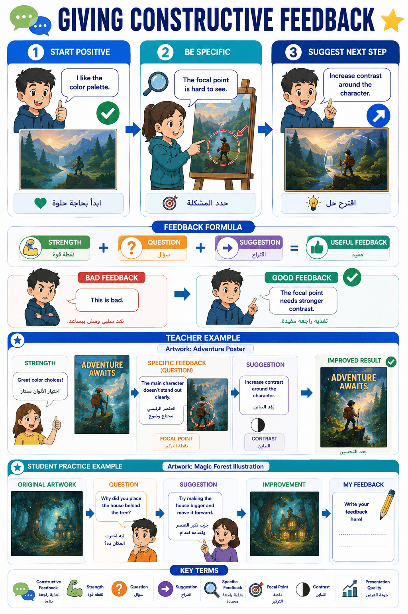
بعد ما نخلص شغلنا.
بنحتاج نسمع آراء الآخرين.
لكن مش أي تعليق يعتبر Feedback مفيد.
لازم يكون Feedback يساعد الشخص يتحسن فعلًا.
العربية
(ملاحظات تساعد على التطوير)
لما ندي رأينا في شغل حد.
هدفنا مش الانتقاد.
وهدفنا مش إحباط الشخص.
هدفنا نساعده يطوّر شغله.
عشان كده الـ Feedback الجيد بيكون:
محترم
واضح
مفيد
العربية
(ابدأ بحاجة كويسة)
قبل ما تتكلم عن أي مشكلة.
اذكر حاجة عجبتك.
ده بيخلي الشخص يتقبل الملاحظات بشكل أفضل.
وكمان يساعده يعرف نقاط قوته.
"عجبني جدًا اختيار الألوان."
وبعدين نكمل باقي الملاحظات.
العربية
(حدد بالظبط بتتكلم عن إيه)
بدل ما تقول:
"التصميم مش حلو."
قول:
"العنوان صغير شوية ومش باين."
كل ما كنت محدد أكثر.
كل ما كانت الملاحظة مفيدة أكثر.
"الشخصية ممتازة لكن الخلفية محتاجة تباين أقوى."
العربية
(اقترح خطوة للتطوير)
الملاحظة الممتازة مش بتقف عند المشكلة.
لازم تقترح حل أو خطوة قادمة.
كده الشخص يعرف يعمل إيه بعد المراجعة.
"جرّب تكبر العنصر الرئيسي شوية علشان يشد العين أكثر."
https://chatgpt.com/s/m_6a5a9d93f1808191b17d283f975e0f42
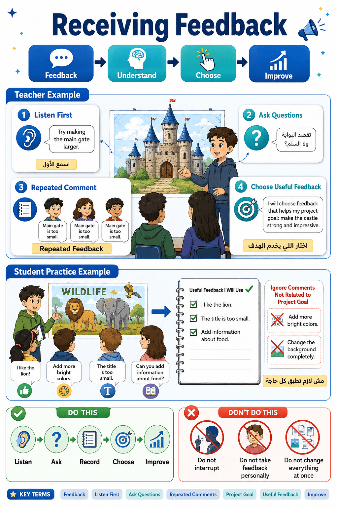
في السلايد اللي فات اتكلمنا عن إزاي ندي Feedback يساعد الناس تتحسن.
دلوقتي هنتكلم عن الجزء التاني من الموضوع.
إزاي نستقبل الـ Feedback بشكل صح.
لأن في ناس كتير بتعرف تدي رأي، لكن مش كلها بتعرف تستفيد من آراء الآخرين.
العربية
(ملاحظات تساعدك تطور شغلك)
أول حاجة لازم نفهمها إن الـ Feedback مش هجوم شخصي.
لما حد يقول إن في مشكلة في التصميم.
ده مش معناه إنه بيهاجمك أنت.
هو بيتكلم عن الشغل نفسه.
ودي نقطة مهمة جدًا لأي فنان أو مصمم.
كل المحترفين بيتعرضوا للمراجعة والنقد بشكل مستمر.
لو حد قال:
"العنوان صغير ومش واضح."
ده مش معناه إنك مصمم سيء.
ده معناه إن فيه حاجة ممكن تتحسن.
العربية
(اسمع الأول)
وأنت بتسمع الملاحظات.
خلي الشخص يكمل كلامه.
ما تقاطعش.
أحيانًا بنكون مستعجلين نشرح أو ندافع عن شغلنا.
لكن الأفضل تسمع للنهاية الأول.
العربية
(اسأل لو حاجة مش واضحة)
لو الملاحظة مش مفهومة.
اسأل.
مش مطلوب تخمن المقصود.
كل ما فهمت المشكلة بدقة.
كل ما عرفت تصلحها بشكل أفضل.
ممكن تسأل:
"أنهي جزء بالضبط محتاج يكون أوضح؟"
العربية
(سجل الملاحظات اللي بتتكرر)
لو أكثر من شخص قال نفس الملاحظة.
غالبًا دي إشارة إن فعلاً فيه حاجة محتاجة تعديل.
عشان كده مهم تكتب الملاحظات المتكررة.
3 أشخاص قالوا إن العنصر الرئيسي صغير.
غالبًا فعلًا محتاج يكبر.
العربية
(اختار اللي يخدم هدفك)
مش كل اقتراح لازم يتنفذ.
لازم تسأل نفسك:
هل الاقتراح ده يساعدني أوصل للهدف اللي أنا عايزه؟
لو الإجابة نعم.
طبقه.
لو لا.
ممكن تسيبه.
لو هدفك تعمل تصميم بسيط.
ومحدش اقترح إضافة عشرات التفاصيل.
مش لازم تنفذ الاقتراح.
العربية
(مش لازم تطبق كل حاجة)
دي نقطة مريحة جدًا للمبتدئين.
أنت مش مجبر تستخدم كل رأي تسمعه.
اسمع.
فكر.
اختار.
ثم قرر.
في النهاية أنت صاحب المشروع.
https://chatgpt.com/s/m_6a5a9e6fdef08191af06bc48c1deaba4
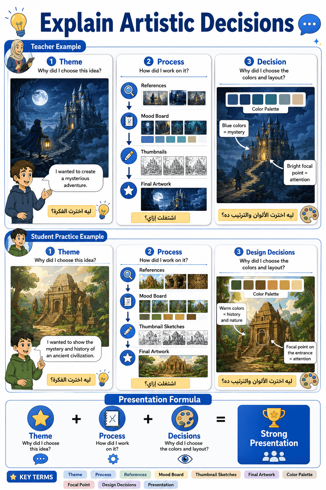
بعد ما طورنا الشغل واستفدنا من الملاحظات.
بييجي وقت العرض.
ولما نعرض شغلنا مش المفروض نعرض النتيجة النهائية فقط.
المهم كمان نشرح طريقة التفكير اللي وصلتنا للنتيجة دي.
العربية
(فكرة المشروع)
لما تعرض شغلك.
ابدأ بشرح الفكرة الأساسية.
ليه اخترت الموضوع ده أصلًا؟
إيه اللي جذبك ليه؟
إيه الرسالة اللي كنت عايز توصلها؟
"اخترت موضوع حماية البيئة لأن مشكلة التلوث بقت منتشرة جدًا."
العربية
(مراحل الشغل)
بعد كده اشرح رحلتك في الشغل.
ورّي الناس إزاي وصلت للنتيجة النهائية.
المحترفين بيحبوا يشوفوا التفكير أكثر من النتيجة أحيانًا.
References
Mood Board
Thumbnail Sketches
Iterations
"جربت 5 Thumbnail Sketches قبل ما أختار التكوين النهائي."
العربية
(قرارات التصميم)
اشرح ليه اخترت الألوان.
ليه اخترت مكان العنصر الرئيسي.
ليه استخدمت شكل معين.
كل قرار في التصميم له سبب.
"اخترت الأزرق لأنه بيدي إحساس بالهدوء والثقة."
https://chatgpt.com/s/m_6a5aaeaf427081918dbc85d21ffce4cf
Prompt Template للطالب
PROJECT TITLE:
[اكتب اسم المشروع]
PROJECT THEME:
[المشروع بيتكلم عن إيه؟]
ARTWORK DESCRIPTION:
[اوصف التصميم الحالي]
MAIN FEEDBACK:
[أهم Feedback أخدته]
PLANNED IMPROVEMENT:
[إيه التعديل اللي هتعمله؟]
MAIN FOCAL POINT:
[إيه أهم عنصر في التصميم؟]
--------------------------------------------------
Create a professional educational infographic titled:
"Artwork Refinement"
Style:
Exactly the same visual style as previous activities.
Layout:
Left side:
BEFORE VERSION
Show original artwork.
Add callouts identifying weaknesses.
Right side:
AFTER VERSION
Show improved artwork.
Add callouts identifying improvements.
Center:
Large arrow:
Feedback → Improvement
Bottom section:
Improvement Checklist
Better Composition
Stronger Focal Point
Improved Contrast
Clearer Storytelling
Better Mood
Professional Finish
Use green checkmarks for completed improvements.
Design Goals:
Clearly show growth from previous feedback.
Maintain identical project identity from earlier activities.
No watermark.
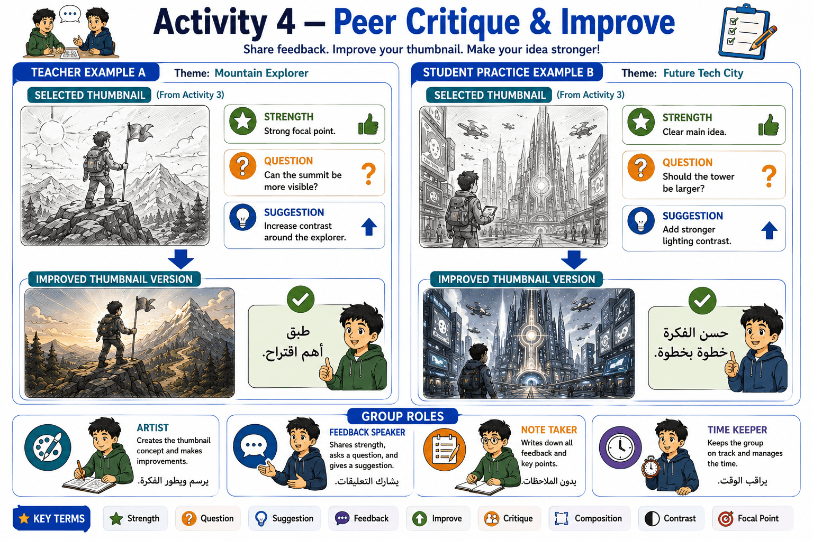
بعد ما اتعلمنا إزاي ندي Feedback وإزاي نستقبله.
دلوقتي هنطبق الكلام ده عمليًا في نشاط جماعي.
العربية
(هدف النشاط)
كل طالب هيعرض جزء من شغله الحالي.
ممكن يكون:
Thumbnail Sketch
Mood Board
Work In Progress
وبعد كده باقي المجموعة هتساعده بملاحظات مفيدة.
العربية
(حاجة شغالة كويس)
أول شخص يراجع الشغل.
لازم يذكر نقطة قوة واحدة.
حاجة عجبتك فعلًا.
"اختيار الألوان ممتاز."
العربية
(سؤال واحد)
بعد كده نسأل سؤال يساعد الفنان يفكر أكثر.
السؤال مش هدفه الانتقاد.
هدفه فتح أفكار جديدة.
"ليه اخترت تخلي الشخصية صغيرة جدًا؟"
العربية
(اقتراح واحد)
في النهاية نقدم اقتراح عملي واحد فقط.
مش قائمة طويلة من التعديلات.
اقتراح واضح وقابل للتنفيذ.
"جرّب تزود التباين حوالين العنصر الرئيسي."
العربية
(اكتب تعديل هتعمله)
بعد ما تسمع الآراء.
اختار تعديل واحد فقط.
واكتبه.
دي خطوة مهمة لأنها تحول الكلام إلى فعل.
العربية
(أدوار المجموعة)
المجموعة فيها 4 أدوار:
صاحب الشغل.
يعرض الملاحظات.
يسجل الآراء المهمة.
يتابع الوقت.
https://chatgpt.com/s/m_6a5aaf850e088191a144ac57c9f80fd9
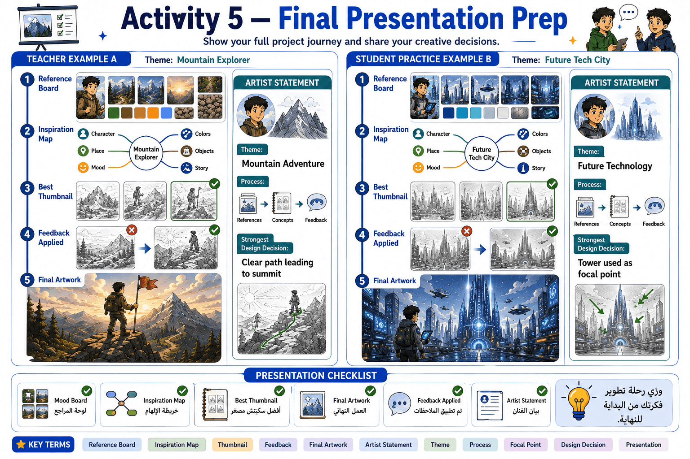
Prompt Template للطالبPROJECT TITLE:
[اكتب اسم المشروع]
PROJECT THEME:
[المشروع بيتكلم عن إيه؟]
MAIN CHARACTER:
[مين الشخصية الرئيسية؟]
ENVIRONMENT:
[فين الأحداث بتحصل؟]
MOOD:
[الإحساس العام؟]
FINAL ARTWORK DESCRIPTION:
[اوصف المشهد النهائي بالكامل]
ARTIST STATEMENT:
[احكي فكرة المشروع وأهم قرار تصميمي]
BEST CONCEPT:
[ليه اخترت هذا الـ Concept؟]
MAIN IMPROVEMENT:
[إيه أهم تطوير حصل بعد الـ Feedback؟]
--------------------------------------------------
Create a professional educational presentation board titled:
"Final Project Presentation"
Style:
Exactly the same visual style as Activities 1–4.
Modern educational infographic.
Flat vector illustration.
Professional classroom presentation board.
White background.
Blue educational palette.
Rounded cards.
Soft shadows.
Large readable typography.
Ultra HD 4K.
Print-ready.
Layout:
Top Header:
Project Title
Center:
Five connected presentation cards arranged as a visual journey:
1. Inspiration Map
2. Best Concept
3. Feedback Received
4. Improvements Applied
5. Final Artwork
Large centerpiece:
FINAL ARTWORK
Include:
Artist Statement card.
Project Summary card.
Design Decisions card.
Bottom section:
Presentation Reflection
What did I learn?
What was improved?
What am I most proud of?
Show a cartoon boy student confidently presenting the project beside a display board.
Design Goals:
Professional presentation quality.
Clear project evolution.
Show complete design journey from Activity 1 to Activity 5.
No magic.
No temples.
No religious symbols.
No watermark.
No logo.
بعد التخطيط والتجريب والمراجعة والتحسين.
وصلنا أخيرًا لمرحلة التنفيذ النهائي.
العربية
(حوّل الخطة لشغل كامل)
دلوقتي كل اللي عملناه قبل كده هيبدأ يظهر في النسخة النهائية.
مش بنبدأ من الصفر.
إحنا بنبني على:
Mood Board
Thumbnail Sketches
الفكرة المختارة
العربية
(خلي شغلك القديم دليل ليك)
ارجع دائمًا للمواد اللي جهزتها.
دي الخريطة اللي هتمشي عليها أثناء التنفيذ.
وده بيمنعك من تغيير الاتجاه كل شوية.
العربية
(ابدأ بالكبير وبعدين التفاصيل)
من أشهر أخطاء المبتدئين إنهم يبدأوا بالتفاصيل فورًا.
الصح:
الأشكال الكبيرة الأول.
التكوين العام.
الإضاءة.
بعد كده التفاصيل.
ابدأ برسم الكتل الرئيسية للمشهد.
وبعدين أضف الملابس والملامح والتفاصيل الصغيرة.
العربية
(استخدم كل اللي اتعلمته)
وأنت شغال افتكر كل حاجة درسناها:
Perspective
Light
Shadow
Color
Focal Point
Visual Hierarchy
كل المفاهيم دي المفروض تظهر في المشروع النهائي.
العربية
(احتفظ بنسخ مختلفة)
مهم جدًا تحفظ مراحل الشغل.
علشان:
تقدر ترجع لنسخة قديمة لو حصل خطأ.
تشوف تطورك.
تقارن بين الحلول المختلفة.
احفظ:
Project_v1
Project_v2
Project_v3
بدل ما تشتغل على ملف واحد فقط.
https://chatgpt.com/s/m_6a5a9fcd3efc8191bb3563a46d6cd124
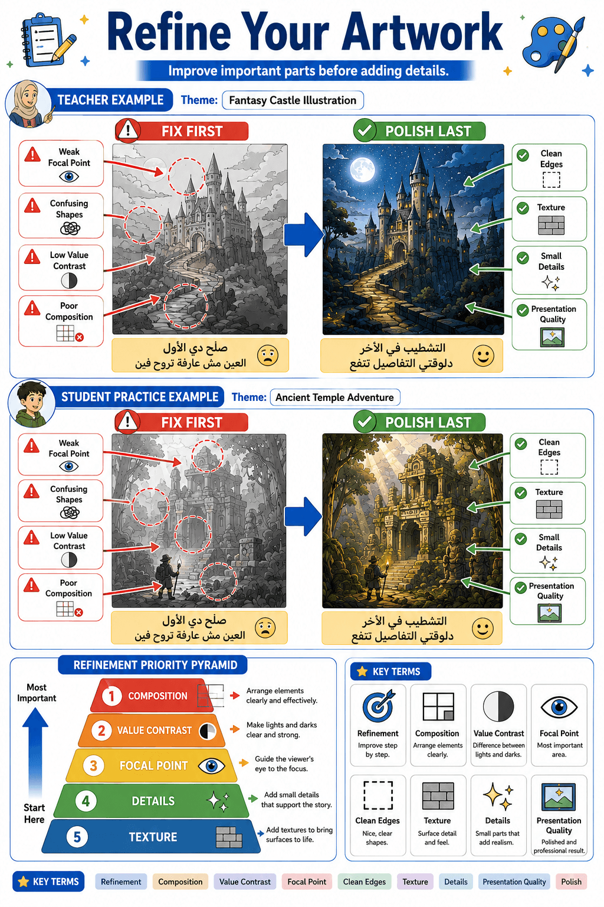
بعد ما نفذنا الشغل الأساسي وبدأنا ناخد ملاحظات من الناس، بنوصل لمرحلة مهمة جدًا اسمها Refinement.
ودي المرحلة اللي بتفرق بين شغل شكله عادي وشغل شكله احترافي.
العربية
(تحسين وتقوية الشغل)
كتير من المبتدئين يفتكروا إن تحسين الشغل معناه إضافة تفاصيل أكثر.
لكن الحقيقة مش دايمًا كده.
أحيانًا أفضل تحسين ممكن تعمله هو إنك تصلح مشكلة موجودة أصلًا.
أو تبسط جزء معقد.
أو توضح فكرة مش باينة.
الهدف هنا مش إن التصميم يبقى مليان تفاصيل.
الهدف إنه يبقى أوضح وأقوى وأسهل للفهم.
لو الشخصية الرئيسية مش باينة وسط الخلفية.
الحل مش إننا نضيف تفاصيل جديدة.
الحل إننا نزود التباين أو نغير مكانها علشان تشد العين أكتر.
العربية
(صلّح المشاكل المهمة الأول)
قبل ما تفكر في اللمعان والتفاصيل الصغيرة.
اسأل نفسك:
هل أهم حاجة في التصميم واضحة؟
هل العين عارفة تروح فين؟
هل ترتيب العناصر مريح؟
هل في أشكال ملخبطة أو متداخلة؟
هل الفرق بين الغامق والفاتح واضح؟
لو الحاجات الأساسية فيها مشكلة.
يبقى لازم تتصلح الأول.
لو العنوان مش باين.
مش منطقي أقعد أظبط Texture الخلفية قبل ما أصلح العنوان.
العربية
(التشطيب في الآخر)
بعد ما نطمن إن الأساس قوي.
نبدأ نهتم بالحاجات الصغيرة.
زي:
تنضيف الحواف
تحسين التفاصيل
إضافة Texture لو محتاج
تحسين شكل العرض النهائي
التشطيب بيخلي الشغل شكله احترافي.
لكن لو الأساس ضعيف مش هيقدر ينقذه.
زي بناء بيت.
الأول نبني الأساس والحوائط.
وبعدين نفكر في الدهان والزينة.
https://chatgpt.com/s/m_6a5aa0b67930819188d09c3734557474
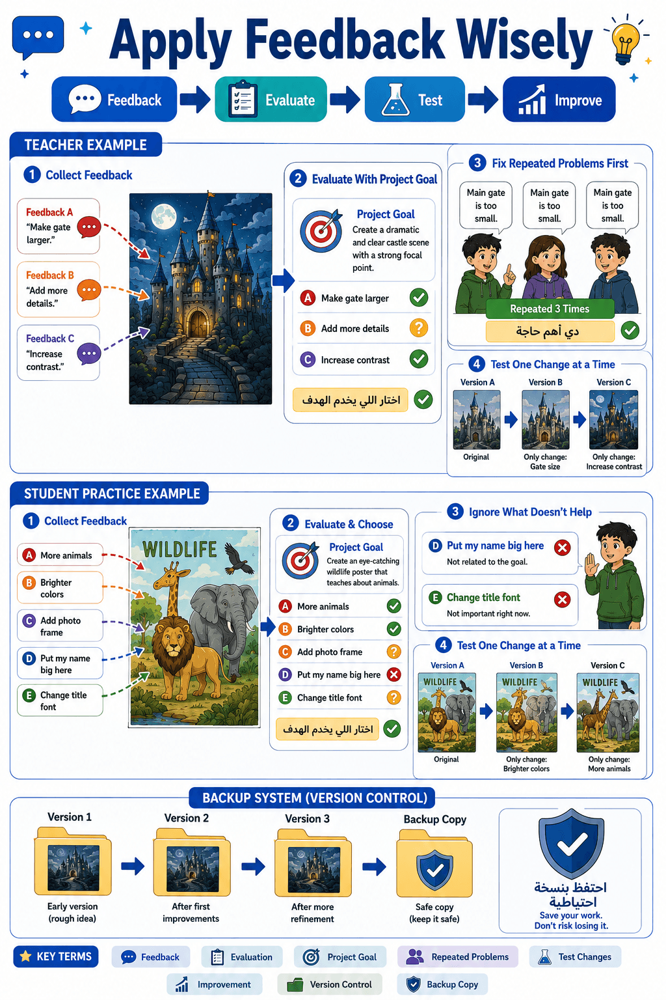
اتعلمنا إزاي نستقبل الملاحظات.
ودلوقتي هنتكلم عن إزاي نستخدمها بشكل ذكي.
لأن مش كل ملاحظة لازم تتنفذ بنفس الطريقة.
العربية
(قارن الملاحظات بهدفك)
قبل ما تنفذ أي اقتراح.
ارجع واسأل نفسك:
أنا أصلًا عايز أوصل إيه؟
هل الملاحظة دي هتساعدني أوصل للهدف ده؟
لو نعم.
يبقى تستحق التجربة.
لو هدفك تعمل تصميم هادئ.
وحد اقترح ألوان صاخبة جدًا.
ممكن الاقتراح ميخدمش هدف المشروع.
العربية
(ابدأ بالمشاكل اللي الكل لاحظها)
لما تلاقي نفس الملاحظة اتكررت أكثر من مرة.
دي غالبًا أهم نقطة محتاجة تعديل.
ابدأ بيها الأول.
لأن تأثيرها غالبًا أكبر من باقي الملاحظات.
خمسة أشخاص قالوا إن العنصر الرئيسي صغير.
يبقى دي أول حاجة تتصلح.
العربية
(جرّب تعديل واحد كل مرة)
من الأخطاء الشائعة إن الطالب يغير عشر حاجات مرة واحدة.
ساعتها مش هيعرف أي تعديل هو اللي حسن الشغل.
الأفضل تغير حاجة واحدة.
وبعدين تشوف النتيجة.
وبعدها تنتقل للحاجة اللي بعدها.
كبر العنصر الرئيسي الأول.
وبعدين قيّم النتيجة.
بعدها عدل الألوان لو لسه محتاج.
العربية
(احتفظ بنسخة قبل التعديلات الكبيرة)
مهم جدًا تحفظ نسخة احتياطية.
لأن ممكن تعمل تعديل كبير.
وبعدين تكتشف إن النسخة القديمة كانت أفضل.
وجود نسخة محفوظة بيديك أمان أثناء التجريب.
العربية
(اشرح استفدت من أنهي ملاحظات)
لما تعرض شغلك النهائي.
ورّي الناس إيه اللي اتغير.
وإيه الملاحظات اللي ساعدتك تطور الشغل.
ده بيوضح إنك اشتغلت على تحسين المشروع فعلًا.
"بعد المراجعة كبرت الشخصية الرئيسية وزودت التباين علشان تبقى أوضح."
https://chatgpt.com/s/m_6a5aa21b69b8819187e79ac4b2ae7619
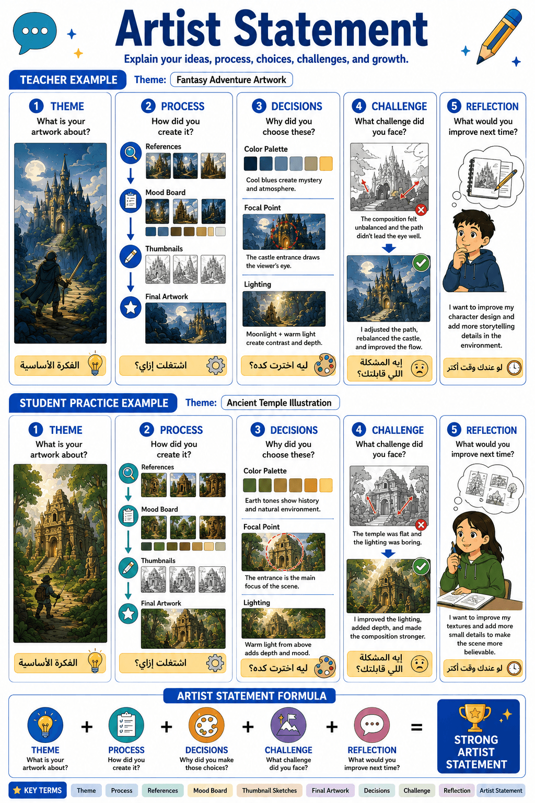
بعد ما خلصنا المشروع.
بييجي وقت نشرح الفكرة والرحلة اللي مرينا بيها.
وده اللي بنعمله من خلال الـ Artist Statement.
العربية
(كلام قصير بيشرح فكرتك واختياراتك)
الـ Artist Statement مش قصة طويلة.
ومش تقرير.
هو شرح بسيط يساعد الناس تفهم:
فكرتك
طريقة شغلك
اختياراتك
التحديات اللي قابلتك
العربية
(المشروع بيتكلم عن إيه؟)
ابدأ بشرح الفكرة الأساسية.
عايز المشاهد يفهم إيه من الشغل؟
إيه الرسالة أو الموضوع الرئيسي؟
العربية
(اشتغلت إزاي؟)
احكي بشكل مختصر عن مراحل شغلك.
إيه الـ References اللي استخدمتها؟
إيه الـ Thumbnails اللي جربتها؟
إزاي الملاحظات ساعدتك؟
العربية
(ليه اخترت الاختيارات دي؟)
اشرح أسباب قراراتك.
ليه اللون ده؟
ليه الإضاءة دي؟
ليه العنصر الرئيسي في المكان ده؟
كل قرار لازم يكون له سبب يخدم الرسالة.
العربية
(إيه أصعب حاجة قابلتك؟)
كل مشروع بيكون فيه تحديات.
المهم مش وجود المشكلة.
المهم إزاي تعاملت معاها.
"كان صعب أوضح الشخصية وسط الخلفية، فزودت التباين وغيرت الإضاءة."
العربية
(لو عندك وقت أكتر كنت هتعمل إيه؟)
السؤال ده مهم لأنه بيورّي إنك قادر تقيّم شغلك بنفسك.
مفيش مشروع كامل 100%.
دايمًا في حاجات ممكن تتحسن.
"كنت هقضي وقت أكتر في تحسين الخلفية وإضافة تفاصيل بيئية."
https://chatgpt.com/s/m_6a5aa28c78408191b6ac9f24fff5b73d
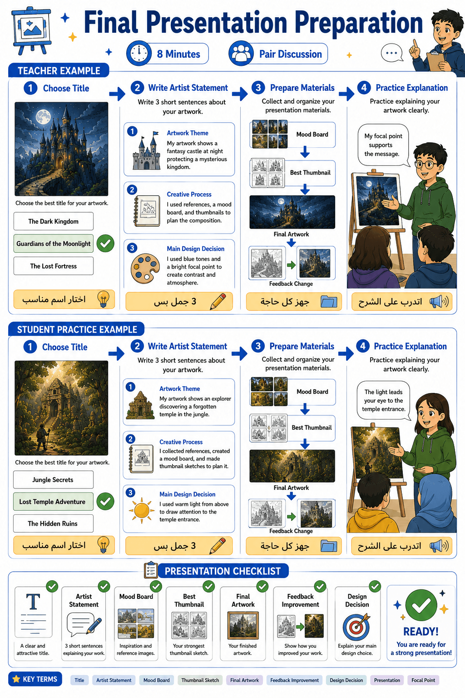
قبل العرض النهائي.
محتاجين نرتب أفكارنا ونجهز الكلام اللي هنقوله.
وعشان كده عندنا نشاط سريع للتحضير.
العربية
(اختار اسم للشغل)
اسم المشروع مهم.
لأنه أول حاجة الناس بتشوفها.
حاول يكون:
واضح
سهل التذكر
مرتبط بالفكرة
بدل "Project 1"
ممكن تسميه:
"The Lost Explorer"
أو
"Guardians of Nature"
العربية
(اكتب شرح قصير من 3 جمل)
حاول تلخص مشروعك في 3 جمل فقط:
بيتكلم عن إيه.
استخدمت إيه علشان توصل الفكرة.
أهم قرار تصميم أخدته.
العربية
(جهز الحاجات اللي هتعرضها)
وأنت بتحضر العرض.
رتب العناصر دي:
Mood Board
أفضل Thumbnail
الشغل النهائي
تعديل عملته بسبب Feedback
لأنها بتوضح رحلة التطور كاملة.
العربية
(اتدرب تشرح أهم قرار تصميم)
غالبًا المعلمين أو الزملاء هيسألوك:
"ليه اخترت الشكل ده؟"
أو
"ليه استخدمت الألوان دي؟"
عشان كده لازم تكون جاهز تشرح أهم قرار تصميم أخدته.
"استخدمت ألوان باردة وإضاءة هادئة علشان أوصل إحساس بالوحدة والغموض."